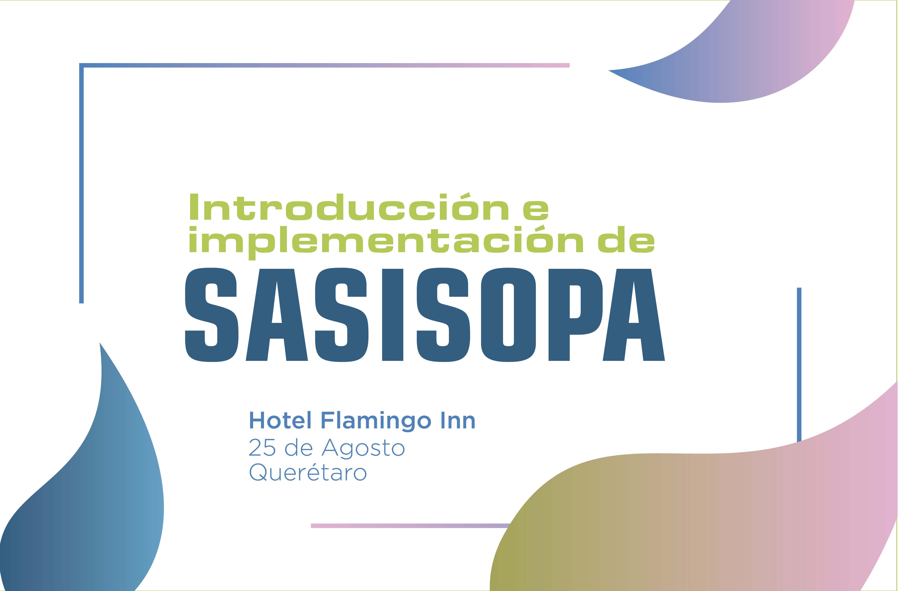

DespachoLitro por Litro
Founded in 1829 on an isthmus between Lake Monona and Lake Mendota, Madison was named the capital of the Wisconsin Territory in 1836.
ConsejoObten tu SASISOPA
Founded in 1829 on an isthmus between Lake Monona and Lake Mendota, Madison was named the capital of the Wisconsin Territory in 1836.

IntroduccionSASISOPA
Founded in 1829 on an isthmus between Lake Monona and Lake Mendota, Madison was named the capital of the Wisconsin Territory in 1836.